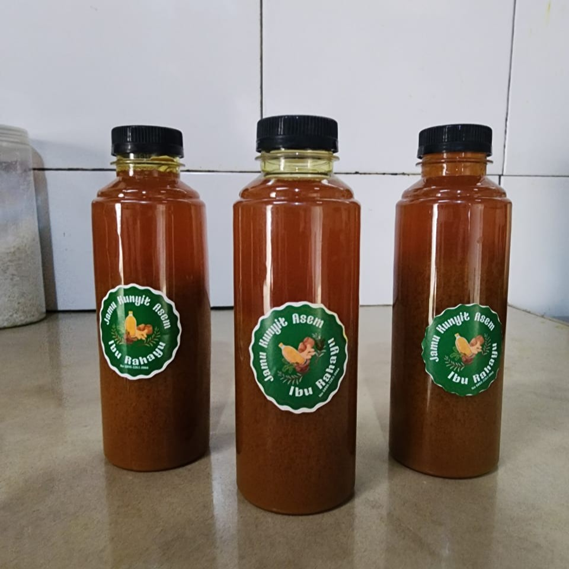

Manfaat Jamu Kunyit Asam
- Menyegarkan tubuh dan membantu mengurangi rasa lelah
- Membantu meredakan pegal dan nyeri ringan
- Mendukung kesehatan pencernaan
- Dapat membantu mengurangi rasa tidak nyaman saat haid*
- Mengandung antioksidan alami untuk daya tahan tubuh
- Membantu menjaga metabolisme dan kebugaran harian
*Manfaat bersifat tradisional dan hasil dapat berbeda pada setiap orang.
Harga: Rp 8.000 / botol
Pesan Produk Ini